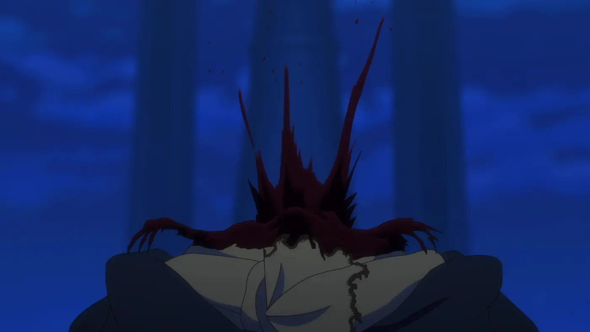
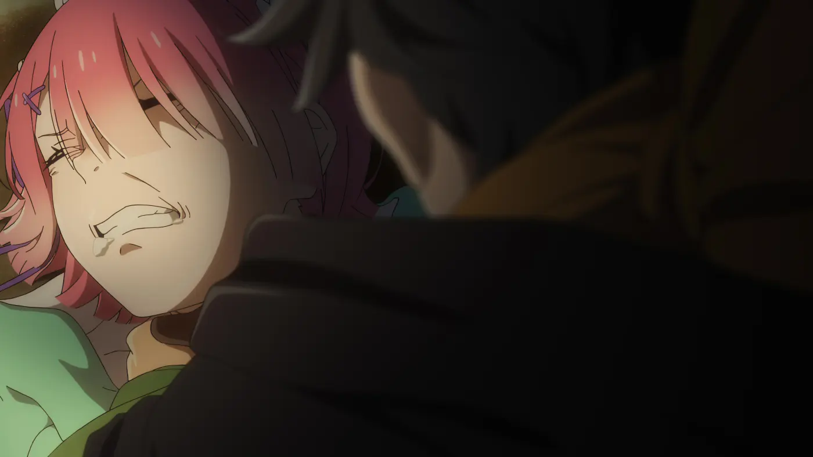
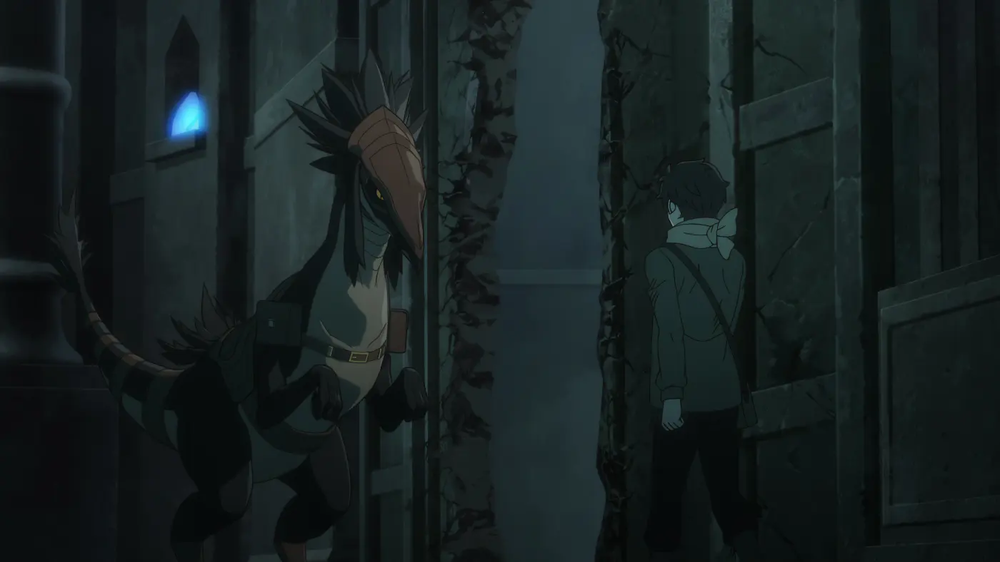

Character 01
Subaru Natsuki
Isugawa, Japan — and then somewhere else
He opens a convenience store, he complains about his lot, and then a sidewalk swallows him whole. What he finds on the other side is a fantasy world with magic in it, monsters in the dark, and a half-elf who needs saving. He is given one power, and it is the worst power imaginable: he can die.
All characters

A convenience store, and then nothing
Subaru is not a hero when the story starts. He is a student with bad luck, a shaky home life, a job he is not good at, and the permanent conviction that nobody would notice if he simply disappeared. He narrates his own life in the small, tired way people do when they have decided in advance that they are small.
Then the ground opens. He wakes in a forest, gets hit by a stranger, and falls in love with a girl whose hair is the colour of a snowfield. Within a week he is dragging a possessed girl around a medieval city, fighting a man who has lived for a thousand years, and trying to explain what a cell phone is to people who have never seen one.
The joke is that none of it works. He tries comedy, he tries bravado, he tries explaining the future. It gets him beaten nearly to death in a back alley. And it is precisely here, in the worst possible moment, that the world quietly gives him the one thing nobody else in it has: a second chance.

Return by Death
The power is simple to state and impossible to live with. When Subaru dies, the clock turns back. He wakes up again, in the same place, with the same people, at a slightly earlier moment. He remembers everything: every conversation, every insult, every person he could not save.
What makes this a story and not a puzzle is that the loop does not make him better. It makes him worse, for a while. Knowing everything, Subaru becomes a bully, a manipulator, a boy who treats people like pieces on a board because he has already seen how badly the game can end. He uses what he knows. He hoards it. And the more he cheats, the more alone he gets, and the less the loop can hold him together.
So the real cost of Return by Death is not the dying. It is remembering.

What makes him work
A story about a loop could easily be a story about a genius. Subaru is not one. He is loud, impulsive, sentimental, and physically fragile. His sword work is bad. His plans are bad. He cries in front of people and then denies doing it.
What he has is a kind of stubbornness that most protagonists do not get to keep. He gets beaten and broken and humiliated, and the next morning he gets up and tries again, and the thing he tries again for is never his own life. It is always somebody else's.
That is why the story needs the people around him. Reinhard, the strongest man in the world, cannot be beaten into giving up, because he does not know how. The witches, each one a catastrophe that happened to a person. Emilia, who has been waiting for someone her whole life without knowing it. And the small, competent, ordinary people of the town who keep the machinery of the world turning while the heroes are busy.

Why he matters to the story
Re:Zero is a story about hope, which is a strange thing to build around a boy who keeps dying. The trick is that Subaru is not optimistic. He is pessimistic, exhausted, and fully aware of how the story usually goes. He does not believe that good things are coming. He believes that the bad thing is already here, and that the only question left is whether he does the same thing twice.
And then he does not do it twice. That is the whole engine of the series. Every arc is a situation designed to make him give up on the person he is supposed to protect, and every arc ends with him doing one more impossible thing, not because he is certain it will work, but because walking away has stopped being an option he is willing to take.
It is not wisdom. It is not strength. It is a boy who has died too many times to be comfortable with the version of the world where he does nothing. Everything Tappei Nagatsuki builds on top of that — the witches, the Sanctuary, the capital, the four seasons of a world that is slowly being unmade — only works because the person at the centre of it is small, and tired, and still going.
Keep going
There are forty-six volumes of this, an animation adaptation, and a season four that opens up the whole world again. If you want to see the frames, they are all in the gallery.